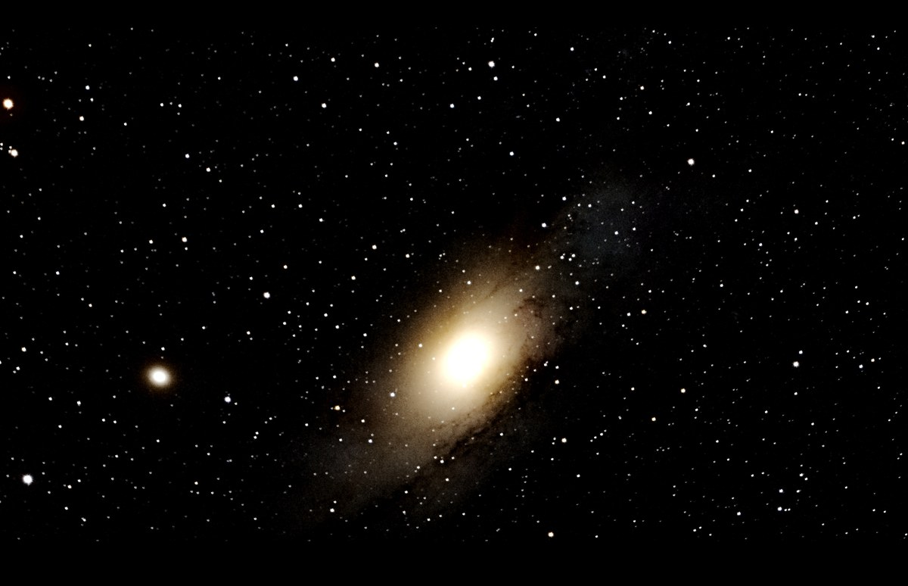
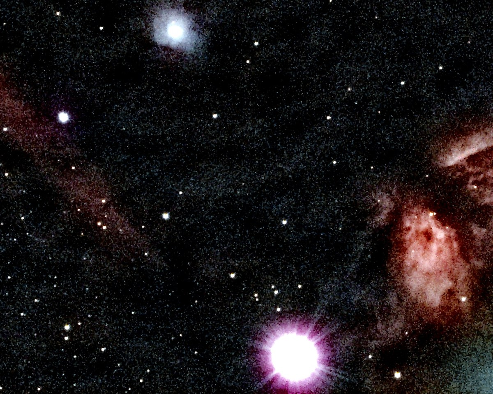

A night of frames in about two minutes
The Omega Nebula, 114 frames, on an 8-core desktop: 132 seconds from the raw files to a finished image. The red block is the part that makes the picture look good; the rest is getting 114 frames to line up. These 30-second subs cross this version's threshold for keeping per-frame cosmic-ray detection on through a big session, which is most of why loading takes longer than it used to — it also quiets the stack, see the comparison below.
- Load, calibrate, score69.3 s
- Register8.4 s
- Align and stack20.9 s
- Finish the image22.7 s
- Disk and setup10.7 s
Load, calibrate, score
Each frame is corrected with your bias, dark and flat, turned from the sensor's colour mosaic into an image, and scored for sharpness and noise. Frames that are clearly bad are dropped.
Register
Frames are lined up to a fraction of a pixel, including the slow rotation of the field that an alt-az mount like the Origin produces.
Align and stack
The aligned frames are combined with outlier rejection, so satellite trails, hot pixels and cosmic rays drop out instead of averaging in.
Finish the image
Background gradients, colour and noise are handled, then the result is stretched to be viewed. The FITS file it saves stays linear, ready for any further work.
Frames are processed one at a time, so 500 frames need about the same memory as 50. Temporary files take roughly 100 MB of disk per frame while the run is going.
Watch it work, or skip the settings
Point the app at a folder of frames and press Run. Every option is one form, and the defaults choose settings for your target. These are real screens from stacking the Omega frames above.


How it compares with Siril and DeepSkyStacker
Same frames, same bias, dark and flat, one machine, each tool on default-style settings. Three Celestron Origin sessions: the Omega Nebula (114 × 30 s), the Sunflower Galaxy (158 × 20 s) and the Sculptor Galaxy (532 × 10 s).
| Session | Stack only | OriginStack, finished image | Peak memory | Star width |
|---|---|---|---|---|
| Omega, 114 frames | 102 s / 63 s | 132 s | 18.4 / 8.1 GB | 4.39 / 4.56 px |
| Sunflower, 158 frames | 106 s / 81 s | 159 s | 16.9 / 8.7 GB | 3.56 / 3.60 px |
| Sculptor, 532 frames | 258 s / 150 s | 270 s | 16.7 / 11.2 GB | 2.78 / 2.95 px |
Star width on the same stars (smaller is sharper)
Omega
Sunflower
Sculptor
What the numbers say
Sharpness: OriginStack is as sharp or sharper. Its stars are 3% narrower than Siril's on Omega, level on Sunflower and 6% narrower on Sculptor. It also used every frame (114, 158 and 532 of 532), where Siril used 111, 157 and 525.
Speed: it depends on the session, and now on your sub length. On Omega, OriginStack's stack-only time is 102 s against Siril's 63 s (1.6 times as long) — slower than an earlier version of this page reported, because Omega's 30 s subs now cross this version's threshold for keeping per-frame cosmic-ray detection on through a big session (previously skipped by default above ~20 frames); that's most of the extra time, and it's also what closes most of the noise gap below. Sunflower and Sculptor's shorter subs (20 s, 10 s) fall under that threshold and keep the old default, but this version's finishing step is roughly twice as fast for every session regardless of sub length — their table figures above are from the previous measurement and have not been re-run since this pass. Siril's own time moves by up to 15% between runs: its Omega ranged from 53 to 72 s across our runs, 63 s the latest.
Noise: closer than it was, on sessions long enough to earn it. On Omega, OriginStack's per-pixel noise is now 0.87 to 1.03 times Siril's (was 0.99 to 1.19) — the same 30 s-sub cosmic-ray fix above, not a separate change. Sunflower and Sculptor's subs are too short to trigger it by default, so their figures (1.09 to 1.20 on Sunflower, 1.05 to 1.33 on Sculptor) stand from the earlier measurement. The underlying cause is the same either way: the debayer filter smears a single-pixel cosmic-ray or hot-pixel spike further in red/blue than in green, and stack-level rejection alone runs too late to fully catch it; per-frame detection catches it before debayering, at a real time cost on long sessions (see Speed above), which is why it is a threshold rather than always on. Force it either way with --cosmic-ray-rejection / --no-cosmic-ray-rejection.
Memory does not grow with the session. OriginStack ranged 16.7 to 18.4 GB across the three sessions (Omega's cosmic-ray pass adds some of that), set by the number of workers (-j lowers it), while Siril's grew from 8.1 to 11.2 GB. Siril uses less at these sizes. Peak temporary disk was about the same for both, at 18 to 59 GB.
DeepSkyStacker took 14 min 8 s on Omega, produced stars softer than both others, and at its default settings left hot-pixel streaks and a few misregistered frames.
OriginStack's case is what comes after the stack: it finishes the image in the same run with no setup, explains the night with diagnostics, runs fully offline if you ask, and does the rest the other tools leave to you. On a plain stack it is now competitive on sharpness, close to Siril on noise on longer subs where per-frame cosmic-ray detection kicks in, further behind on shorter subs where it doesn't, and behind Siril on time. These numbers replace earlier ones: an earlier version of this page overstated sharpness because of how stars were chosen for measurement, and OriginStack's stars were then genuinely softer than Siril's until we found a hot-pixel filter that was clipping star cores, by switching steps off one at a time, and fixed it. Omega's figures above were refreshed on 2026-09-22 after a performance pass (post-processing roughly twice as fast; a new threshold that keeps per-frame cosmic-ray detection on through long sessions with 25 s+ subs, which is slower but quieter) — Sunflower and Sculptor still reflect the prior measurement and are due for a re-run. Three sessions from one camera are a small sample, and both tools were left at default-style settings. tools/bench_vs_siril.py repeats all of this on your own frames.
Made with it
All from raw Celestron Origin frames, stacked and processed by OriginStack, under measured Bortle 7-9 skies (heavy light pollution, backyard/rooftop, not a dark site) -- see the README for the per-image measurements and method.




Install it
Windows installer
Download the setup file from the latest release and run it. It installs for your user only, adds a Start Menu entry and an uninstaller, and needs no Python.
Prefer the zip? Use Extract All first, then run OriginStack.exe from the extracted folder. Running it from inside the zip fails.
Linux bundle
Download OriginStack-<version>-linux-x64.tar.gz from the latest release, extract it and run the installer. It installs for your user only, adds an application-menu entry, and needs no Python or root.
tar xzf OriginStack-*-linux-x64.tar.gz cd OriginStack-*-linux-x64 ./install.sh
It needs glibc 2.35 or newer (Ubuntu 22.04, Debian 12, Fedora 36 and later) and has had less real-world use than the Windows build. Run ./install.sh --uninstall to remove it.
From source
On Windows, Linux (tested) or macOS (not tested):
git clone https://github.com/hd152/originstack cd originstack pip install -r requirements.txt python desktop_app.py
The command line does the same job: python originstack.py -d lights/ -o stacked.fits. An optional Rust extension speeds up the heavy steps and falls back to plain NumPy without it.
What else it does
Calibration with bias, dark and flat frames, hot-pixel and satellite-trail removal, sigma-clipping and other outlier-rejecting stacking methods, optional drizzle, background and gradient removal, noise reduction and deconvolution, plate solving, colour calibration, photometry and a comet mode. If you are looking for a free alternative to DeepSkyStacker or Siril for Celestron Origin and other one-shot-colour astrophotography data, this is built for that.
What it reads
Celestron Origin FITS, and colour-camera frames as FITS, camera RAW (Canon, Nikon, Sony and others, needs rawpy), TIFF and XISF. SER video is supported for planetary work. Mix formats freely in one folder.
Want it fully offline? Pass --offline, or tick it in the app, and OriginStack makes no network requests at all.